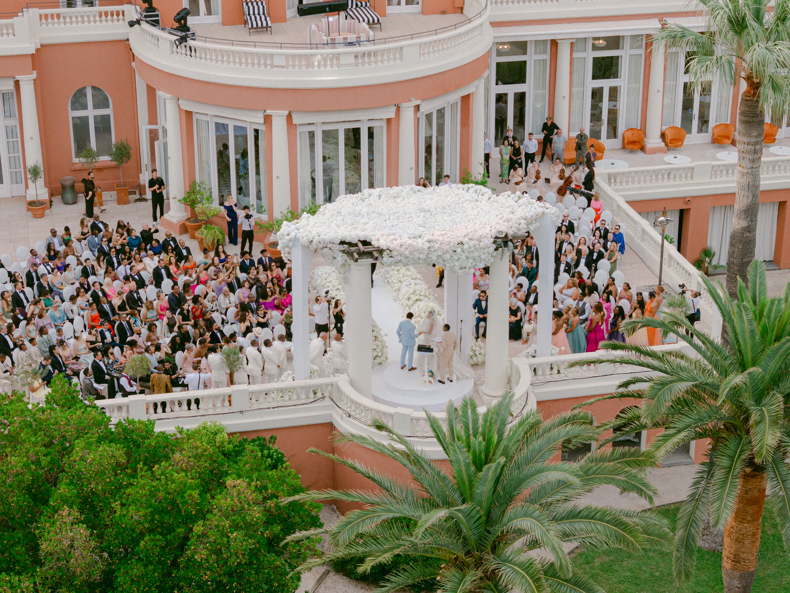
Real Wedding · French Riviera
Jacqueline & Gordon
— The Film
— The Story
Jacqueline and Gordon's wedding in St-Tropez could be summarized in one simple word: WOW.
Five days of celebration at Le Beauvallon, overlooking the bay of St-Tropez. Day one opened with a seaside dinner and a fashion show of designer collections, crowned by a drone light spectacle over the water. Day two honored Gordon's heritage with a traditional tea ceremony before flipping into a Bridgerton-meets-1980s party ... neon, vintage styling, and a dance floor with no mercy.
Day three: rare wines and spirits tasted poolside, then a late night in a St-Tropez restaurant. Day four, the main event ... vows on the Beauvallon terrace above the sea, fireworks, a private concert, and an after-party that only surrendered at sunrise. Day five ended the only way it could: a foam party at the pool.
Alongside the planning of Rendez-vous in Paris, the florals and décor of Reverie d'Azur, entertainment by Black Rabbit Project and our friends at Maddy Christina, we filmed a celebration that refused to repeat itself for five straight days.
— The Wedding Day
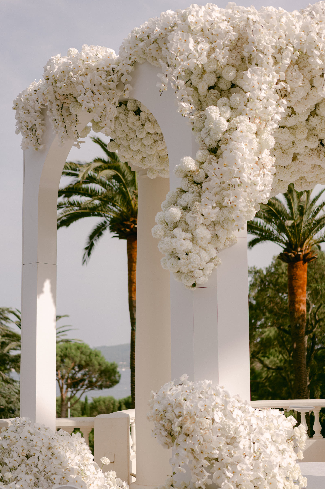
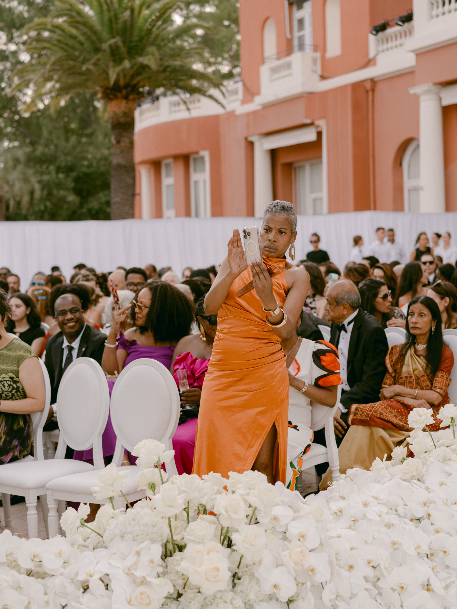
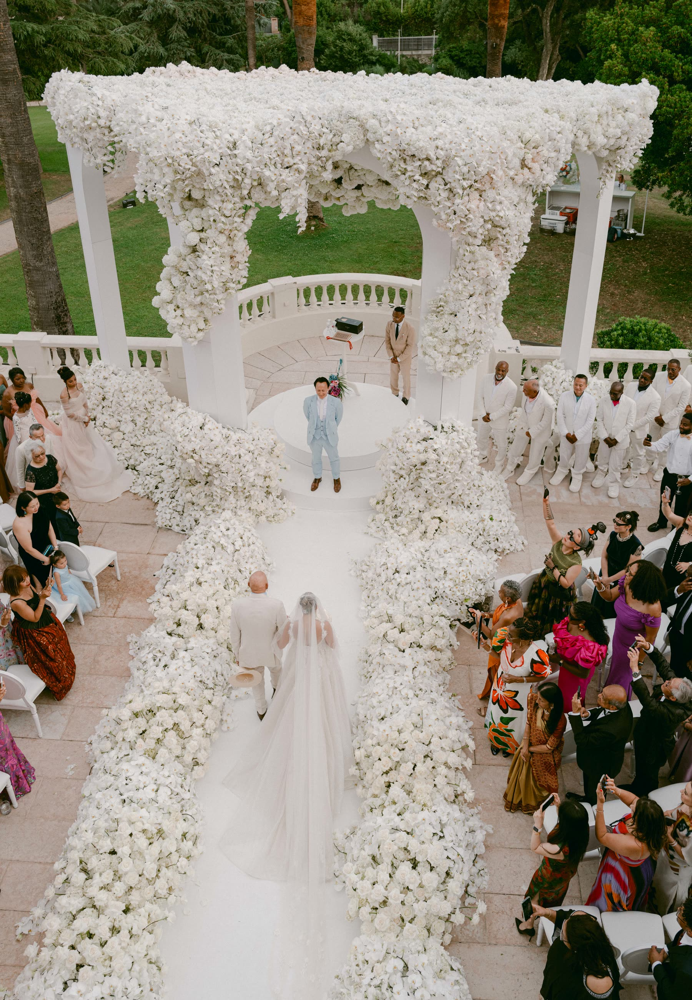
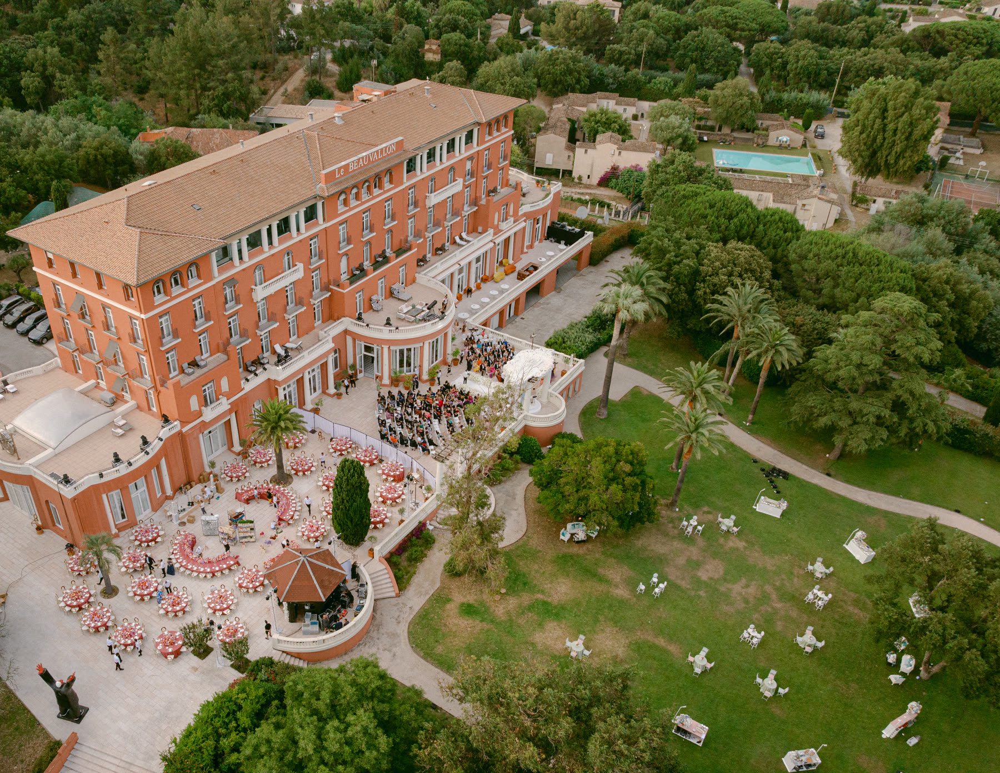
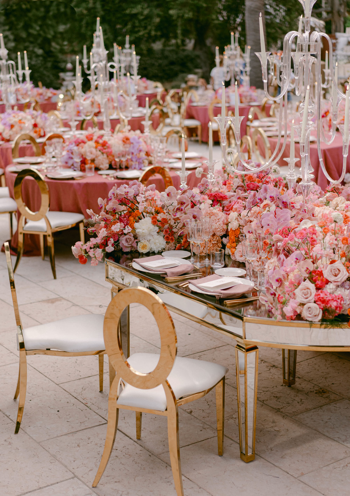
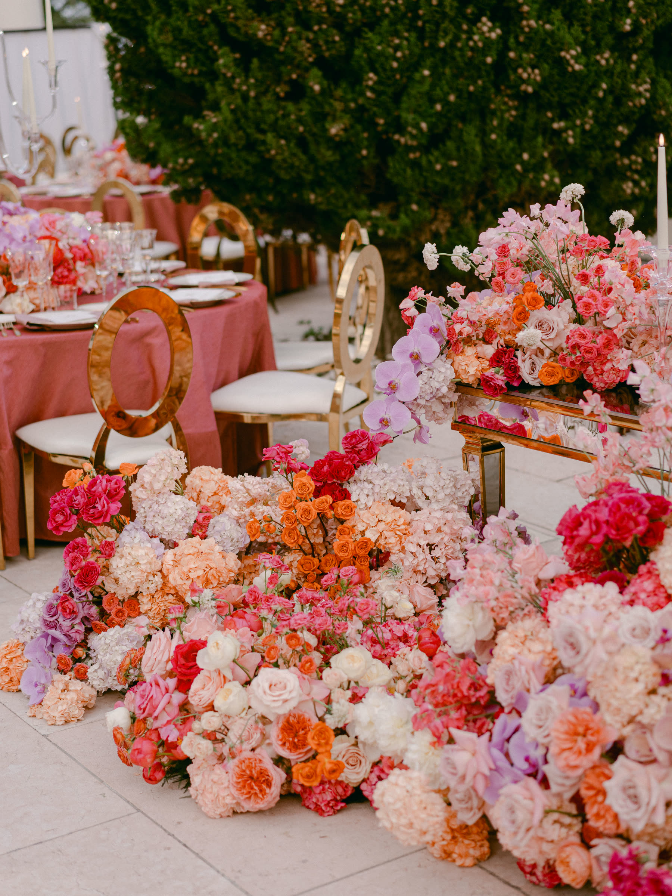
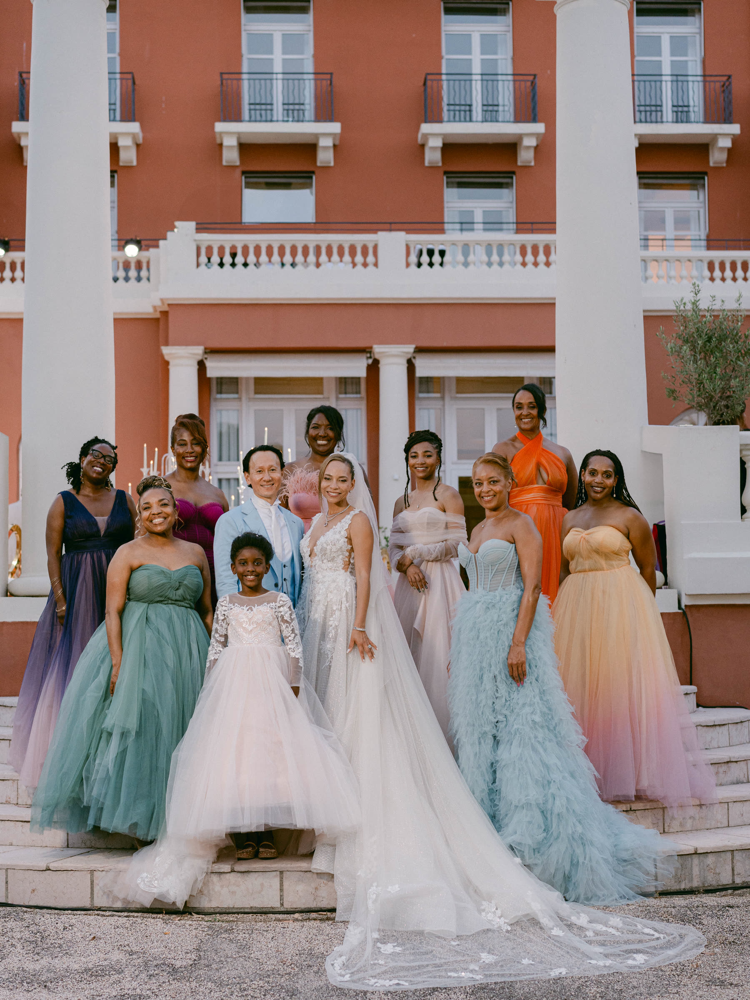
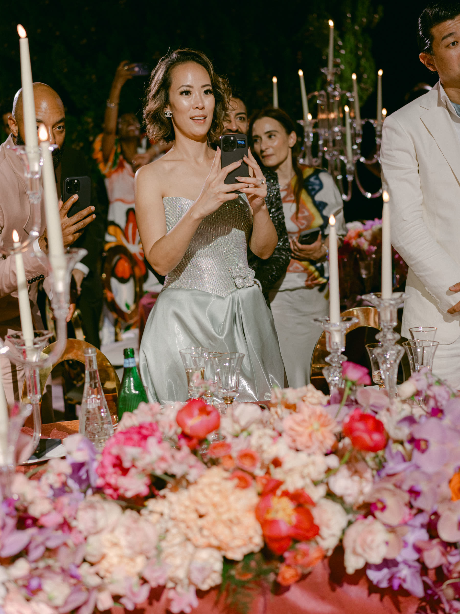
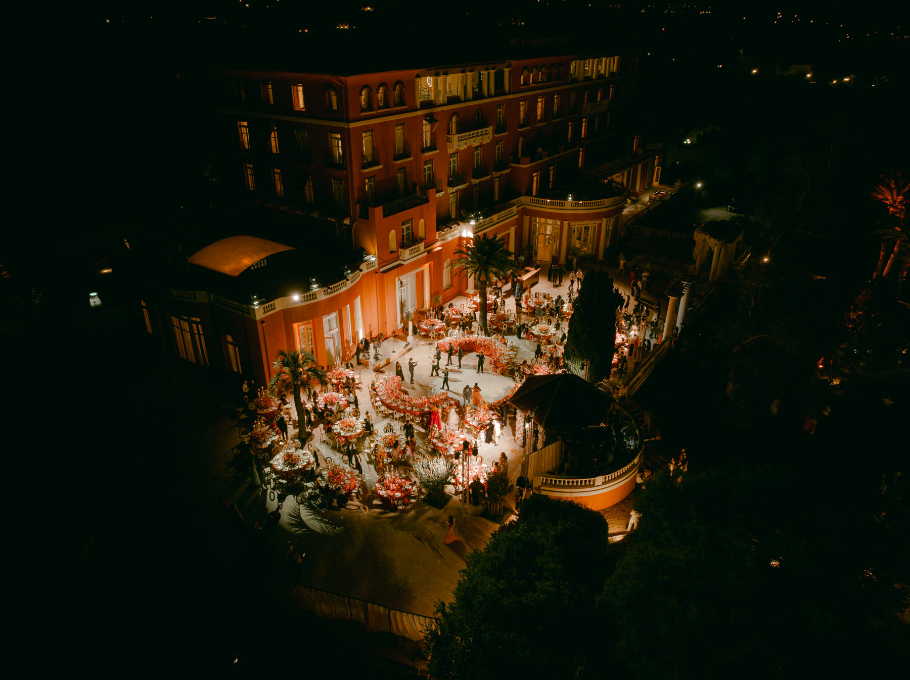
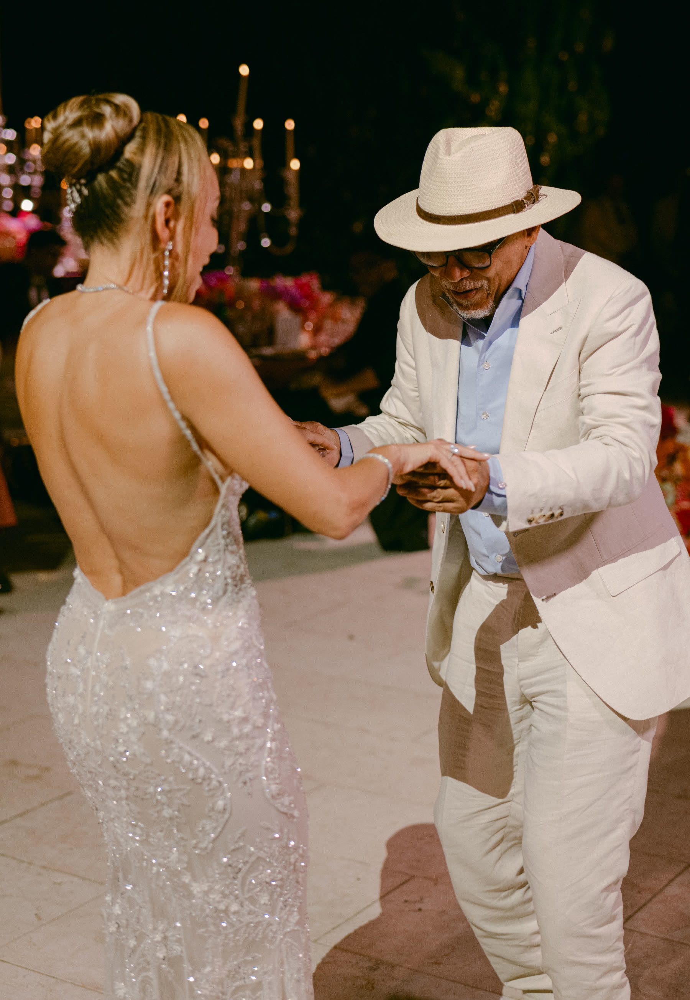
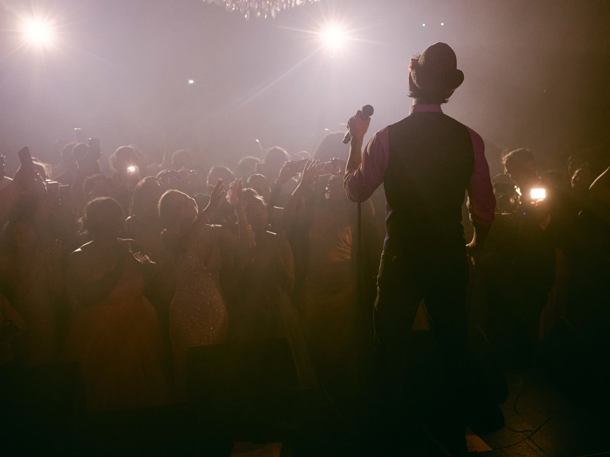
— Next wedding
— Begin Your Journey